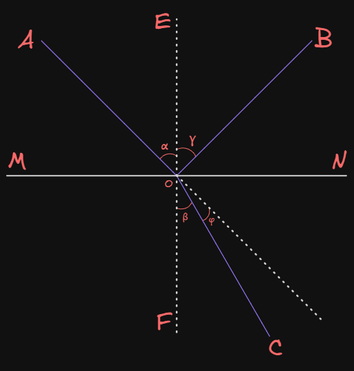
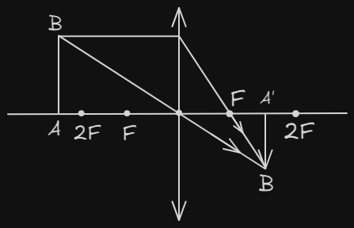
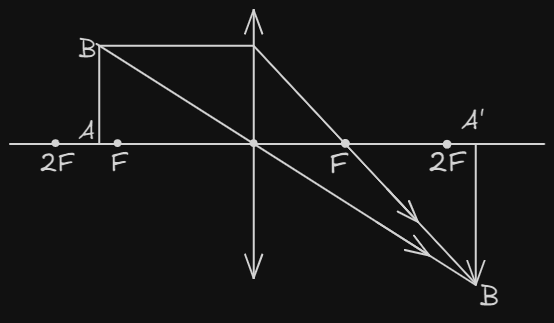
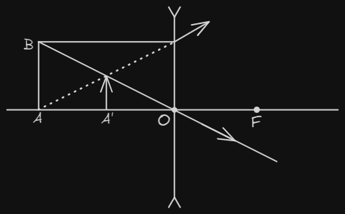

Dərs 25. Həndəsi optika. Güzgülər və linzalar.
Fizikanın işıq hadisələrindən bəhs edən bölməsi Optika adlanır.
İşığın yayılma istiqaməti İşıq şüası adlanır.
İşıq elektromaqnit dalğasıdır. İşıq bircins mühitdə Düz xətt boyunca yayılır.
Kölgənin əmələ gəlməsi, Günəş və Ay tutulması işığın düzxətli yayılmasının nəticəsidir.

(
(
(
(
(
(
(
(
(
Düşən şüa, qayıdan şüa və şüanın düşmə nöqtəsindən iki mühiti ayıran sərhədə qaldırılan perpendikulyar bir müstəvi üzərində yerləşir. Qayıtma bucağı düşmə bucağına bərabərdir:
Düşən şüa, sınan şüa və şüanın düşmə nöqtəsindən iki mühiti ayıran sərhədə qaldırılan perpendikulyar bir müstəvi üzərində yerləşir. Düşmə bucağının sinusunun sınma bucağının sinusuna nisbəti iki mühit üçün sabit kəmiyyət olub, ikinci mühitin birinciyə nisbətən Sındırma əmsalı adlanır:
Mühitin vakuma nəzərən sındırma əmsalı Mütləq sındırma əmsalı adlanır:
və uyğun olaraq mühitlərdə işıq sürəti olduğundan sındırma qanunu həmçinin aşağıdakı kimi yazıla bilər:
Nisbi sındırma əmsalı (
) - Sınma hadisəsinin baş verdiyi mühitlərdə işıq sürətlərinin nisbətinə bərabərdir:
İşığın dalğa xassəsinə əsasən işıq bir mühitdən digər mühitə keçərkən onun tezliyi dəyişmir. Dalğa uzunluğu və sürəti sındırma əmsalı ilə tərs mütənasib olaraq dəyişir.
İşıq şüası vakkumdan hər hansı mühitə keçərkən sındırma qanunu:
İşıq sındırma əmsalı böyük olan mühitdən kiçik olan mühitə (sudan havaya) keçərkən düşmə bucağını artırdıqca sınma bucağı artır. Bu zaman qayıdan şüanın intensivliyi (parlaqlığı) artır, sınan şüanın intensivliyi isə azalır.
Düşmə bucağının müəyyən
Ortası kənarlardan qalın olan linza Toplayıcı (Qabarıq) linza adlanır.
Ortası kənarlardan nisbətən nazik olan linza Səpələyici (Çökük) linza adlanır.
Qalınlığı səthinin əyrilik radiusundan çox kiçik olan linzaya Nazik linza deyilir.
Linzanın mərkəzindən keçən
(
Optik mərkəzdən keçən digər xətlər Linzanın köməkçi optik oxları adlanır.
Qabarıq linzanın baş optik oxuna paralel düşən işıq şüaları linzada sınaraq əks tərəfdə baş optik ox üzərində bir nöqtədə (
Həmin nöqtədən optik mərkəzə qədər məsafə də
(
Toplayıcı linzanın optik qüvvəsi (
Linzanın fokus məsafəsi və optik qüvvəsi Onun maddəsinin sındırma əmsalından və Linzanın səthlərinin əyrilik radiuslarından asılıdır:
Bir neçə linzadan ibarət olan linzalar sisteminin optik qüvvəsi linzaların optik qüvvələrinin cəminə bərabərdir:
Səpici linza baş optik oxuna paralel düşən şüalar linzada sınaraq əks tərəfdə səpilir.
Linzanın fokus məsafəsini
Cisim sonsuz uzaq məsafədə yerləşir (
Cisim ikiqat fokusun arxasında yerləşir (

Cisim ikiqat fokusda yerləşir (
Cisim baş fokusla ikiqat fokus arasında yerləşir (

Cisim baş fokus nöqtəsində yerləşir (
Cisim baş fokus nöqtəsilə linza arasında yerləşir. Bu halda cismin xəyalı Mövhumi, düzünə və böyüdülmüş olur. (
Mövhumi xəyala işıq enerjisi toplanmır, ekranda görünmür, ancaq göz ilə müşahidə olunur.
Xəyal həqiqi olduqda
Toplayıcı linzanın düsturu aşağıdakı kimidir:
(
Səpici linzada xəyal həmişə Mövhumi, kiçildilmiş və düzünə alınır. (

Toplayıcı linzanın böyütməsi:
(
Səpici linzanın böyütməsi:
Linza sisteminin böyüməsi:
Lupa - toplayıcı linzadır, gözlə çətin seçilən xırda cisimlərin böyüdülmüş, Mövhumi xəyalını almaqdan ötrü istifadə olunur. Cisim
Fotoaparat - Cisimlərin kiçildilmiş, Həqiqi xəyalını almaq üçündür. Cisim
Proyeksiya aparatı - Cisimlərin ekranda böyüdülmüş, Həqiqi xəyalını almaq üçündür. Cisim
Müstəvi güzgüdə cismin xəyalı Mövhumi, özü boyda və güzgüyə nəzərən simmetrik alınır.
Sferik güzgülərin səthi sferikşəkilli olur.
Sferik güzgü iki növ olur:
Optik mərkəzlə təpə nöqtəsi arasındakı məsafə Güzgünün əyrilik radiusdur və
Optik mərkəzdən keçən ixtiyari düz xətt Sferik güzgünün optik oxu adlanır.
(
(
(
Sferik güzgüdə xəyal qurmaq üçün aşağıdakı xarakterik istifadə etmək daha əlverişlidir:
Cisim sonsuzluqda olduqda (
Cisim güzgünün əyrilik mərkəzindən uzaqda olduqda (
Cisim güzgünün əyrilik mərkəzində olduqda (
Cisim güzgünün əyrilik mərkəzi ilə fokusu arasında olduqda (
Cisim güzgünün fokusunda olduqda (
Cisim güzgünün fokusu ilə qütb nöqtəsi arasında olduqda (
Qabarıq güzgü mövhumi fokusa və əyrilik mərkəzinə malik olduğundan bütün hallarda xəyal güzgünün arxasında (Mövhumi), güzgünün təpə nöqtəsi ilə fokusu arasında, düzünə və kiçildilmiş alınır.
Yaxına uyğunlaşmada büllurun şüalandırma qabiliyyəti artır, uzağa uyğunlaşmada isə azalır.
Normal göz üçün ən yaxşı görmə məsafəsi
Cismə iki gözlə baxdığımız zaman onun üç ölçüsünü, yəni uzunluğunu, enini və hündürlüyünü hiss edirik və daha yaxın cisimləri uzaqdakı cisimlərdən tamamilə atdın fərqləndirə bilirik. Bir gözlə baxdığımız zaman isə üç ölçülü fəzanı xeyli zəif dərk edirik.
İnsanlarda, əsasən peşəsindən asılı olaraq Peşə xəstəliyi sayılan Yaxındangörmə (uzağı pis görən) və Uzaqdangörmə (yaxını pis görən) kimi göz güsurları əmələ gəlir.
Yaxındangörmə qüsurları olan insanlar optik qüvvəsi